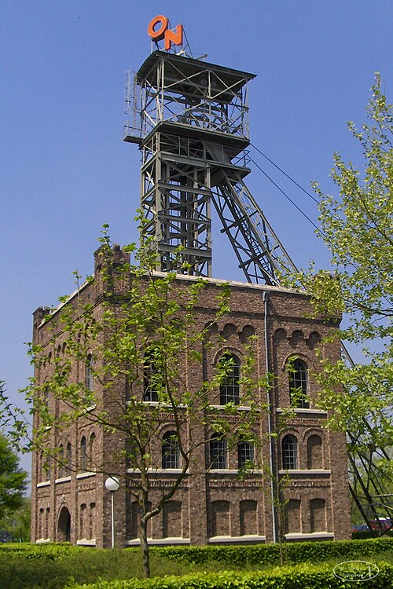
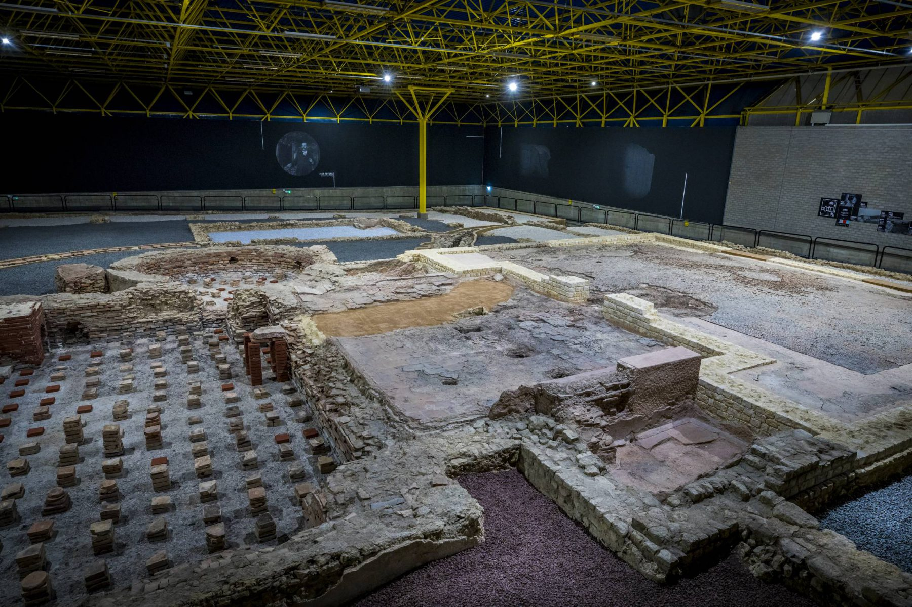

Feitjes over Heerlen
- Heerlen staat bekend om het Romeine Thermenmuseum.
- Het is één van de grootste steden van Zuid- Limburg.
- Heerlen heeft een rijke mijnbouwgeschiedenis.
- Het centrum bevat veel moderne street art.
- De stad heeft een eigen schouwburg met grote producties.
Nederlands Mijnmuseum Oranje Nassau
Dit iconische Schacht - en Ophaalgebouw was jarenlang een verbinding tussen de ondergronde kolenwinning en het bovengrondse leven.
Als een van de weinige fysieke overblijfselen van het mijnverleden, vormt dit bijzondere schacht- en ophaalgebouw uit 1898 nu een monument.
Op deze bijzondere plek kwamen de laatste Nederlandse steenkolen naar boven op 31 december 1974.
Hier bewonder je de liftschacht en objecten uit de mijntijd, vertellen koempels en vrijwilligers over het ondergrondse mijnwerkersleven en er zijn demonstraties van de indrukwekkende ophaalmachine.
Bron: nederlandsmijnmuseum.nl

Thermenmuseum
Zeven jaar voor de bouw van het Colosseum in Rome werd in Coriovallum (Heerlen) een badhuis gebouwd. Het was strategisch gelegen op een kruispunt van twee grote Romeinse wegen, een plek van komen, rusten en verder reizen. Dit badhuis uit 63 na Christus zou vier eeuwen in gebruik blijven om daarna eeuwen in de vergetelheid te raken.
In 1935 werd het badhuis herontdekt en in de jaren erna werd duidelijk dat deze Romeinse resten bescherming verdienden. Met een omvang van zo’n vijftig bij vijftig meter was dit het grootste Romeinse badhuis dat in Nederland is opgegraven. Na het eerste onderzoek werden de resten weer afgedekt met de bedoeling ze later weer bloot te leggen. Intussen was Heerlen een boomtown geworden door de massale steenkoolindustrie en vond de Tweede Wereldoorlog plaats. Tot de jaren zeventig wist vrijwel iedereen in Nederland van het bijzondere Romeinse badhuis in Heerlen.
Het duurde tot 1977 tot het badhuis van Coriovallum een museum kreeg: het Thermenmuseum. Intussen werd de allesomvattende mijnindustrie in Heerlen opgedoekt en raakte de stad in de decennia erna in een diep dal. Pas toen Heerlen in het nieuwe millennium hieruit kroop, kwam er hernieuwde aandacht voor het Romeinse badhuis.
Bron: hetromeinsmuseum.nl
